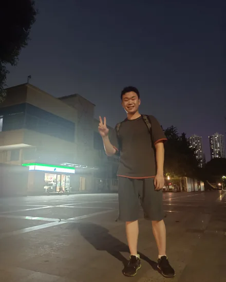
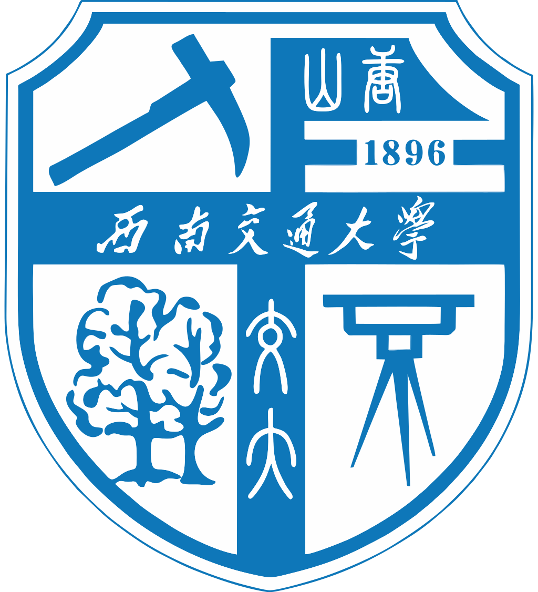
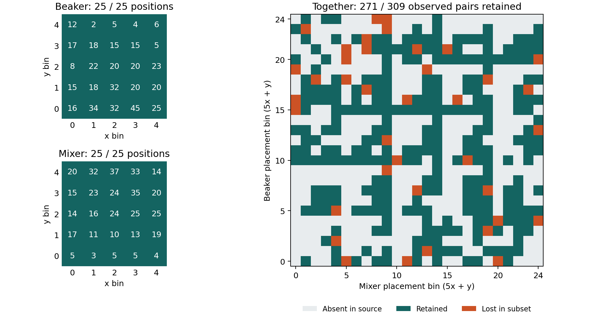
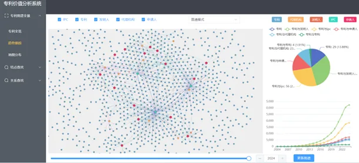
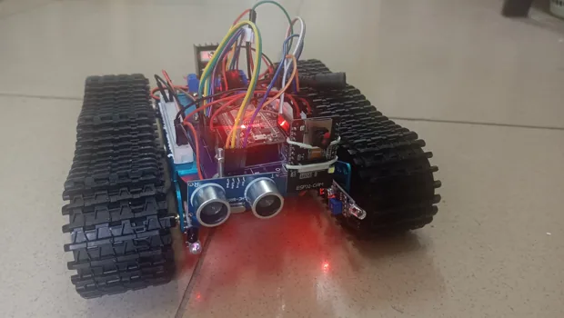

中国科学院计算技术研究所
硕士在读，导师陈云霁
2026.09 至今
中国科学院计算技术研究所 · 硕士研究生
我搭建了覆盖十项操作任务的双臂真机平台，目前在找具身操作算法、Sim-to-Real 和真机强化学习方向的实习。读研前，我在小米做量产固件，也为全国智能汽车竞赛做过车端视觉、通信和遥测。

硕士在读，导师陈云霁
2026.09 至今

计算机与人工智能学院
计算机科学与技术学士
2020.09 – 2024.06
大家电技术中台部

NeurIPS 竞赛 · 2026.08 – 2026.11
我搭建了覆盖十项任务的 PiPER 双臂真机部署与评测平台，接入三视角 RGB、14 维关节及夹爪状态、模型推理与 CAN 控制。为桌面整理生成 1,000 条仿真示范，并按任务调整每次推理后实际执行的动作步数与阶段规则。
团队以 77∶23 混采仿真和真机示范，微调 π0.5，部分任务另用真机数据续训。团队获仿真预赛第 3 名（共 47 队），我负责的移液器任务获仿真预赛单项综合第 1。
每项任务使用 1,000 条仿真轨迹和 60 条官方真机示范。专家脚本在部分摆位更容易成功，这些摆位在训练集中也就出现得更频繁。团队随机化物体位姿、相机和光照，再用 Qwen 离线筛选示范，希望减少常见摆位在训练集中的占比。
我们在部分边界摆位上观察到改善。仅用真机示范继续训练，有时会削弱策略对其他摆位的适应能力，因此只在部分任务上采用第二阶段。报告记录了这些定性观察。我是报告共同作者，负责十任务真机平台与部署，并为桌面整理生成仿真轨迹。
从一批 600 条搅拌器仿真示范中筛出 449 条后，烧杯和搅拌器各自的 25 个位置格都有样本。把两件物体放在一起看，原有的 309 种位置组合只剩下 271 种。图中每个橙色方格，都是筛选后消失的一种组合。


百度创意组 · 2023.05 – 2023.08
获全国二等奖。我负责车端识别数据采集与模型部署。团队以知识蒸馏和剪枝优化 YOLOv3-MobileNetV3，推理从 3 FPS 提至 30 FPS。
高频发送控制指令时，车端偶发丢指令或解析错误。我调整串口收发协议，用 DMA 中断收发数据，并编写 Vue3 调参界面。界面经队友实现的 Flask 中转服务连接 STM32，支持看着实时图传调节 PID 参数。



将 Franka 齿轮插入基线适配到 PiPER。采集 19 条示范，转换为 3,740 条状态转移，验证回放采样和 JAX 学习器离线加载。为减少夹爪仍托住齿轮时的误判，在真机上验证了视觉奖励、夹爪开度与连续三帧联合判定。